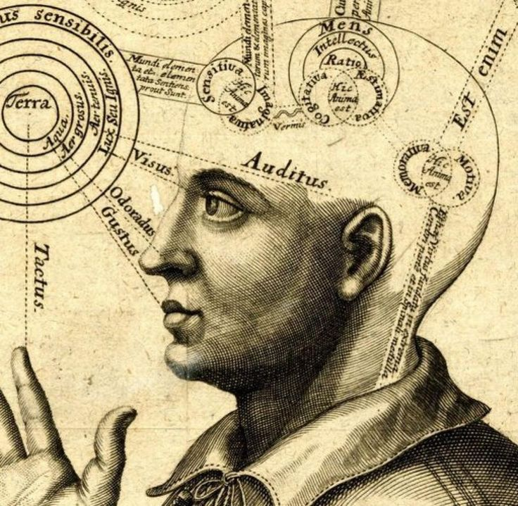

Who Was Al-Kindi?
Al-Kindi (Abū Yūsuf Yaʿqūb ibn Isḥāq al-Kindī, c. 800–870 CE) was a major philosopher, mathematician, scientist, and intellectual of the early Islamic world. He is widely regarded as the first self-identified philosopher in the Arabic philosophical tradition and became an important figure in the development of Arabic and Islamic philosophy.
Al-Kindi lived during the Abbasid period and was closely associated with the intellectual culture of Baghdad. He worked with scholars involved in translating Greek philosophical and scientific works into Arabic, helping create an intellectual environment in which Aristotle, Neoplatonic thinkers, mathematics, astronomy, and other Greek sciences became available to Arabic-speaking scholars.
Al-Kindi did not simply reproduce Greek philosophy. He used Greek philosophical concepts to investigate questions about God, creation, the soul, intellect, knowledge, nature, and the structure of the universe within an Islamic intellectual context. His work therefore represents an important bridge between Greek philosophy and Islamic philosophy.
Al-Kindi: Quick Facts
- Full name — Abū Yūsuf Yaʿqūb ibn Isḥāq al-Kindī
- Known as — Al-Kindi or Alkindus
- Born — c. 800 CE
- Died — c. 870 CE
- Associated with — Basra and Baghdad
- Philosophical tradition — Early Arabic and Islamic philosophy
- Major influences — Aristotle, Neoplatonic philosophy, mathematics, and Greek science
- Major philosophical subjects — Metaphysics, theology, intellect, soul, epistemology, cosmology, and ethics
- Famous work — On First Philosophy
- Other important work — On the Intellect
- Important ethical work — On Dispelling Sorrows
Al-Kindi's Early Life and Historical Background

Al-Kindi was born around 800 CE and was associated with the Arab tribe of Kinda. He was born in Basra and was educated in Baghdad, which had become one of the most important intellectual centers of the Abbasid world.
His intellectual career developed during a period in which scholars were translating major works of Greek philosophy and science into Arabic. Al-Kindi became closely associated with this translation movement and helped connect the translators, patrons, and scholars participating in this intellectual project.
His philosophical career was especially prominent during the reign of the Abbasid caliph al-Muʿtasim. Al-Kindi dedicated his famous philosophical work On First Philosophy to him and also served as tutor to his son Aḥmad.
Why Is Al-Kindi Called the First Arab Philosopher?
Al-Kindi is frequently associated with the title "philosopher of the Arabs". More precisely, modern scholarship describes him as the first self-identified philosopher in the Arabic tradition.
His importance comes from more than his individual philosophical arguments. Al-Kindi helped establish a philosophical vocabulary in Arabic and promoted the study of Greek philosophy as a serious intellectual discipline.
His work created an important foundation for later philosophers including Al-Farabi, Avicenna (Ibn Sina), and Averroes (Ibn Rushd), although each of these thinkers developed substantially different philosophical systems.
Al-Kindi and the Greek-Arabic Translation Movement
One of the most important aspects of Al-Kindi's intellectual career was his involvement with the Greek-Arabic translation movement. Scholars working in the Abbasid world translated important philosophical, mathematical, medical, and scientific works from Greek into Arabic.
Al-Kindi was associated with one of the major groups of translators active in ninth-century Baghdad. The works circulating through this intellectual network included writings attributed to Aristotle as well as Neoplatonic texts associated with Plotinus and Proclus.
This translation activity was crucial for the development of Arabic philosophy. Greek philosophical terminology had to be communicated in a new language and intellectual setting, and Al-Kindi's circle contributed to the formation of an Arabic philosophical vocabulary.
Al-Kindi's approach was strongly affirmative toward the philosophical search for truth. He regarded philosophical knowledge from earlier cultures as something that could be studied and used in the pursuit of truth.
Al-Kindi and Greek Philosophy
Greek philosophy was one of the most important intellectual influences on Al-Kindi. Among the Greek thinkers, Aristotle was particularly important to his philosophical project.
At the same time, Al-Kindi's philosophy contains substantial Neoplatonic influence. Ideas associated with Plotinus and Proclus entered the Arabic intellectual world through translated and adapted texts, including works that were attributed to Aristotle even though their actual origins were Neoplatonic.
Al-Kindi therefore represents an early attempt to construct a coherent philosophical system from the Greek inheritance. Aristotle, Neoplatonism, mathematics, astronomy, and other sciences all contributed to his intellectual outlook.
What Was Al-Kindi's Philosophy of Metaphysics?
Metaphysics occupies a central position in Al-Kindi's philosophy. He understood "first philosophy" as the highest form of philosophical investigation and connected it closely with knowledge of the first truth, which he identified with God.
For Al-Kindi, God is the ultimate source of being and truth. His philosophical theology emphasizes the absolute unity and simplicity of God and argues that the unity found in created things ultimately points toward a first source of unity.
His metaphysics therefore connects questions about being, truth, causation, unity, and God. These themes would become central problems for later Islamic philosophers.
Al-Kindi's On First Philosophy
On First Philosophy is Al-Kindi's best-known philosophical work and one of the most important surviving texts from the earliest period of Arabic philosophy.
In this work, Al-Kindi investigates the nature of first philosophy and its relationship to truth, being, unity, and God. He argues for a fundamental source of unity and identifies the ultimate source with the True One.
The work also contains Al-Kindi's argument against the eternity of the world. His position differs from the Aristotelian doctrine of an eternal cosmos and is connected with his understanding of creation and God's causal role.
On First Philosophy therefore illustrates Al-Kindi's broader method: using Greek philosophical concepts while addressing theological questions within an Islamic intellectual environment.
Al-Kindi's Philosophy of God and Divine Unity
The concept of divine unity is central to Al-Kindi's philosophical theology. He argues that the multiplicity and unity found in created things require a fundamental source of unity.
Al-Kindi describes God as the True One, whose unity is not comparable to the limited unity found in created objects.
His treatment of divine unity also leads him to be cautious about applying ordinary predicates to God. Ordinary things can be described through multiple characteristics, but unrestricted divine unity cannot be understood in exactly the same way as the unity of created things.
Did Al-Kindi Believe the Universe Was Eternal?
Al-Kindi rejected the idea that the world is eternal in the sense defended by Aristotle. His argument concerning the world's beginning became an important part of his philosophical disagreement with the Aristotelian account of an eternal cosmos.
Al-Kindi's position connects creation with God's causal activity. He understands creation as the bringing of being into existence from non-being rather than as an eternal process occurring without beginning.
This issue is particularly important in the history of Islamic philosophy because the eternity of the world became one of the major points of controversy between philosophical and theological approaches.
What Was Al-Kindi's Theory of Intellect?

Al-Kindi's theory of intellect is one of his most influential contributions to early Arabic philosophy. His short treatise On the Intellect is particularly significant because it presents one of the earliest Arabic classifications of different kinds or levels of intellect.
His discussion was influenced by Greek philosophical treatments of intellect, especially interpretations of Aristotle's On the Soul.
Al-Kindi distinguishes the activity of intellect from ordinary sense perception. His account helped establish questions about the relationship between intellect, knowledge, imagination, perception, and the soul that later became central to the philosophy of mind in the Islamic philosophical tradition.
Al-Kindi's Philosophy of the Soul
Al-Kindi also wrote extensively about the human soul. His psychological writings were influenced by Aristotle as well as Platonic and Neoplatonic traditions.
In his philosophical psychology, the soul is not simply reduced to the physical body. His writings investigate perception, imagination, intellect, dreams, and the relationship between bodily life and intellectual activity.
His treatment of the soul helped establish philosophical psychology as an important area within the developing tradition of Arabic philosophy.
Al-Kindi's Philosophy of Knowledge and Epistemology
Epistemology in Al-Kindi's philosophy concerns the ways human beings acquire and organize knowledge. His writings distinguish different cognitive capacities, including sensation, imagination, memory, and intellect.
Sense perception provides knowledge of particular, material things, while intellectual activity is concerned with intelligible forms and universals.
His theory of knowledge reflects the influence of Greek philosophy while also contributing to the development of later Arabic theories of intellect and human understanding.
Al-Kindi's Cosmology and Philosophy of Nature
Al-Kindi's philosophy was not limited to metaphysics. He also developed theories concerning the structure and operation of the natural world.
His cosmology draws on Aristotle, Ptolemy, and other Greek scientific traditions. He investigated the relationship between the heavenly spheres and the changing world below them.
Al-Kindi attempted to explain natural processes through causal relationships and mathematical reasoning. This illustrates the close connection between philosophy, mathematics, astronomy, and natural science in his intellectual work.
Al-Kindi's Contributions to Mathematics and Science
Al-Kindi was much more than a philosopher. His surviving and recorded works cover a remarkable range of subjects, including mathematics, optics, medicine, music, astronomy, astrology, and natural science.
Mathematics was particularly important to his intellectual method. He regarded mathematical reasoning as useful for understanding aspects of the natural world and developed works concerning geometry, numbers, optics, and related subjects.
His broad interests demonstrate how philosophy and science were interconnected within the intellectual culture of the early Abbasid period.
What Was Al-Kindi's Philosophy of Ethics?
Al-Kindi's ethical philosophy is closely connected with his understanding of the soul, reason, happiness, and freedom from excessive attachment to material things.
His surviving work On Dispelling Sorrows addresses the problem of grief and emotional disturbance. Al-Kindi argues that excessive attachment to temporary possessions can become a source of suffering.
Philosophical reflection can help a person develop a more rational relationship with loss, desire, and external circumstances. His ethical thought therefore connects philosophy with the cultivation of the rational soul.
Al-Kindi's On Dispelling Sorrows
On Dispelling Sorrows is Al-Kindi's best-known surviving work specifically concerned with ethics and emotional life.
The work examines why human beings experience sorrow and how philosophical reasoning can help them respond to suffering. A major theme is the instability of external possessions and the difficulty of relying on temporary things for lasting happiness.
The text illustrates an important feature of Al-Kindi's philosophy: philosophy is not merely theoretical knowledge. It can also have a practical role in helping human beings cultivate a better intellectual and emotional life.
Al-Kindi and Islamic Philosophy
Al-Kindi's philosophy developed within the intellectual world of Islam. Rather than treating Greek philosophy as incompatible with Islamic thought, he attempted to use philosophical reasoning to investigate questions relevant to Islamic theology.
His writings address topics including God's unity, creation, divine causation, prophecy, the soul, and the structure of the cosmos.
This makes Al-Kindi an important figure in the history of Islamic philosophy: his project was not simply the preservation of Greek philosophy but the development of a philosophical language capable of addressing questions within the Arabic and Islamic intellectual environment.
How Did Al-Kindi Combine Greek Philosophy and Islamic Thought?
One of the defining features of Al-Kindi's philosophy is his attempt to bring together the philosophical inheritance of Greece and the intellectual concerns of the Islamic world.
Aristotle provided an important philosophical framework, while Neoplatonic sources supplied additional ideas about God, unity, intellect, and the structure of reality.
Al-Kindi then used these philosophical resources to address questions concerning Islamic theology and the nature of creation. His philosophy therefore represents one of the earliest major attempts at a synthesis between Greek philosophy and Islamic intellectual thought.
Major Works of Al-Kindi
Al-Kindi was an exceptionally prolific writer. Historical bibliographies attribute hundreds of treatises to him, although many have not survived.
- On First Philosophy — Al-Kindi's major work on metaphysics, God, unity, truth, and the eternity of the world.
- On the Intellect — An important early Arabic philosophical treatment of the different types or levels of intellect.
- On Dispelling Sorrows — A philosophical work concerning sorrow, attachment, happiness, and ethical self-management.
- On Sleep and Dream — A philosophical and psychological investigation of sleep, dreams, and imagination.
- On the Quantity of Aristotle's Books — A work presenting an overview of Aristotle's philosophical writings and their intellectual importance.
- On Perspectives — A work associated with Al-Kindi's investigations into optics and visual perception.
Al-Kindi's Main Philosophical Ideas
1. God as the True One
Al-Kindi's metaphysics places God at the foundation of reality. God is the ultimate source of unity, truth, and being.
2. Philosophy as the Search for Truth
Al-Kindi strongly defended philosophical investigation and the acquisition of truth, including truth inherited from foreign intellectual traditions.
3. The Intellect and Human Knowledge
Human intellectual activity allows people to understand universal and intelligible realities beyond the immediate information provided by the senses.
4. The World and Creation
Al-Kindi rejected the eternity of the world and defended an account of creation associated with God's causal activity.
5. Philosophy and the Good Life
Philosophy can also have a practical function by helping human beings understand desire, sorrow, attachment, knowledge, and happiness.
Al-Kindi and Al-Farabi: What Is the Connection?
Al-Kindi and Al-Farabi belong to different stages of the development of Arabic philosophy. Al-Kindi was active in the ninth century, while Al-Farabi belonged primarily to the tenth century.
Al-Kindi helped establish an intellectual environment in which Greek philosophy could be studied in Arabic. Al-Farabi later developed a much more systematic philosophical synthesis involving logic, metaphysics, political philosophy, and psychology.
Al-Kindi should therefore be understood as a foundational figure whose work helped prepare the way for the more elaborate philosophical systems of later thinkers.
Al-Kindi and Avicenna: Influence on Islamic Philosophy
Avicenna (Ibn Sina) lived more than a century after Al-Kindi and developed one of the most influential philosophical systems in the Islamic world.
Al-Kindi's earlier work was important to the formation of the Arabic philosophical tradition in which Avicenna later worked. In particular, Al-Kindi contributed to the development of Arabic philosophical terminology and the transmission of Greek philosophical ideas.
Avicenna's metaphysics and philosophy of intellect are far more systematic than Al-Kindi's surviving philosophical corpus, but both belong to the broader history of Arabic and Islamic philosophy.
Al-Kindi's Influence and Legacy in Islamic Philosophy
Al-Kindi's direct influence on later Arabic philosophers was uneven. Later thinkers such as Al-Farabi and Averroes did not always cite him extensively.
Nevertheless, Al-Kindi's broader legacy was significant. The philosophical and scientific translations associated with his intellectual circle became important resources for later Arabic philosophical traditions.
His writings also circulated in Latin translation and influenced aspects of medieval European intellectual culture. His works on astrology were particularly influential in the Latin tradition.
Most importantly, Al-Kindi helped establish the idea that Greek philosophical reasoning could become part of a sophisticated Arabic intellectual tradition.
Al-Kindi's Philosophy Explained Simply
Al-Kindi can be understood as a philosopher who asked how the intellectual heritage of ancient Greece could be used to investigate fundamental questions within the Islamic world.
- What is ultimate reality? Al-Kindi connects metaphysics with knowledge of God, the ultimate source of truth and being.
- Why is philosophy valuable? Philosophy is valuable because it is a disciplined search for truth.
- How do humans know? Human cognition involves sensation, imagination, memory, and intellect.
- Is the universe eternal? Al-Kindi rejects the eternity of the world and defends creation.
- Can philosophy improve life? Yes. Al-Kindi's ethical writings argue that philosophical understanding can help people deal with sorrow and attachment to unstable external things.
Why Is Al-Kindi Important in the History of Philosophy?
Al-Kindi is important because he stands near the beginning of the mature philosophical tradition written in Arabic. His work helped establish the study of Greek philosophy within the intellectual world of the Abbasid period.
He also demonstrated that philosophy could address questions concerning God, creation, the soul, intellect, knowledge, nature, and ethics without being restricted to the intellectual categories of ancient Greece.
His importance is therefore both historical and philosophical. He helped transmit and reinterpret Greek thought while contributing original arguments to the developing tradition of Islamic philosophy.
Frequently Asked Questions About Al-Kindi
Who was Al-Kindi?
Al-Kindi was a ninth-century philosopher, mathematician, scientist, and intellectual associated with Basra and Baghdad. He is widely regarded as the first self-identified philosopher in the Arabic tradition.
What is Al-Kindi famous for?
Al-Kindi is famous for helping establish the early Arabic philosophical tradition, promoting Greek philosophy, writing On First Philosophy, and developing important ideas about God, metaphysics, intellect, knowledge, and the soul.
What was Al-Kindi's philosophy?
Al-Kindi's philosophy combined Aristotelian and Neoplatonic ideas with Islamic theological concerns. His philosophy covers metaphysics, God, creation, intellect, soul, cosmology, epistemology, and ethics.
Was Al-Kindi a Muslim philosopher?
Al-Kindi worked within the intellectual and religious environment of the Islamic world and wrote philosophical works addressing Islamic theological questions. He is therefore an important figure in the history of Islamic and Arabic philosophy.
Why is Al-Kindi called the philosopher of the Arabs?
Later writers associated Al-Kindi with the title "philosopher of the Arabs" because of his Arab lineage and his foundational role in the early Arabic philosophical tradition.
What is Al-Kindi's most famous book?
Al-Kindi's best-known philosophical work is On First Philosophy, a major text dealing with first philosophy, God, unity, truth, being, and the eternity of the world.
What did Al-Kindi believe about God?
Al-Kindi describes God as the True One and the ultimate source of unity, truth, and being. His philosophical theology emphasizes divine unity and simplicity.
Did Al-Kindi believe the world was eternal?
No. Al-Kindi rejected the eternity of the world and defended an account of creation in which the world depends causally upon God.
What is Al-Kindi's theory of intellect?
Al-Kindi's theory of intellect distinguishes different aspects or levels of intellectual activity and investigates how human beings acquire intelligible knowledge. His On the Intellect became an important early text in Arabic philosophy of mind.
What did Al-Kindi say about the soul?
Al-Kindi treated the soul as an important subject of philosophical psychology and examined its relationship with perception, imagination, intellect, and bodily life.
What was Al-Kindi's contribution to Islamic philosophy?
Al-Kindi helped establish philosophical study in the Arabic intellectual tradition, contributed to the development of philosophical terminology, and used Greek philosophical ideas to investigate questions concerning God, creation, the soul, intellect, and nature.
How did Al-Kindi influence later Islamic philosophers?
Al-Kindi helped establish the intellectual and philosophical foundations upon which later Arabic philosophers developed more systematic philosophical traditions. His translation circle and philosophical writings were particularly important in the early development of Arabic philosophy.
Was Al-Kindi influenced by Aristotle?
Yes. Aristotle was one of the most important philosophical influences on Al-Kindi. His philosophy also incorporated substantial Neoplatonic ideas transmitted through Arabic translations and adaptations.
What is Al-Kindi's contribution to Greek philosophy?
Al-Kindi helped transmit, explain, and adapt Greek philosophical ideas for Arabic-speaking intellectuals. His work played an important role in the broader transmission of Greek philosophy into the Islamic world.
Related Islamic and Arabic Philosophers
Explore other major thinkers in the development of Islamic philosophy, Arabic philosophy, Persian philosophy, and medieval intellectual history.
Related Areas of Philosophy
Al-Kindi's work connects the history of Islamic philosophy with metaphysics, epistemology, philosophy of mind, ethics, philosophy of science, cosmology, and the transmission of Greek philosophy.
Why Al-Kindi Still Matters
Al-Kindi occupies a foundational position in the history of Arabic and Islamic philosophy. He helped establish philosophical inquiry as an important intellectual activity in the Abbasid world and promoted the study of Greek philosophy as part of the search for truth.
His philosophy brought together Aristotelian and Neoplatonic ideas with questions about God, creation, intellect, the soul, knowledge, nature, and ethical life. This combination made Al-Kindi one of the key figures in the transition from the translation of Greek philosophy to the development of an independent Arabic philosophical tradition.
Understanding Al-Kindi also helps explain the intellectual background from which later philosophers such as Al-Farabi, Avicenna, and Averroes emerged.
Explore Great Philosophers